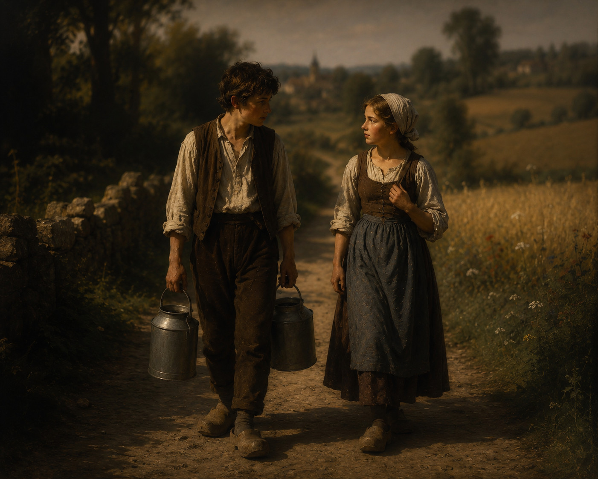

J'ai peur...

Deux jeunes gens descendaient un chemin de campagne.
Le garçon tenait un pot à lait dans chaque main.
La jeune fille rompit le silence :
— J'ai peur que tu veuilles m'embrasser.
Il la regarda, surpris.
— Comment pourrais-je ? J'ai les mains prises.
— Tu pourrais trouver un moyen…
— Lequel ?
— Il te suffirait de poser les deux pots à terre...
Conte traditionnel — librement adapté par Frodric
À propos de cette histoire
Cette petite histoire a été popularisée par Anthony de Mello dans Histoires d'humour et de sagesse. Il n'en précise pas l'origine et ne prétend pas en être l'auteur.
La plus ancienne version imprimée que nous ayons pu retrouver figure dans un recueil d'humour américain publié en 1981.
Tout porte cependant à croire que cette histoire circulait oralement bien avant.
Si vous connaissez une version plus ancienne, n'hésitez pas à me le faire savoir.